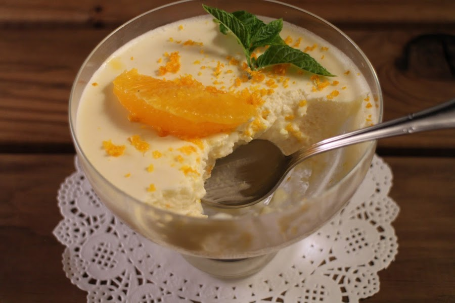

babarios

ingredientes
- 1 Tarro de leche evaporada IDEAL® NESTLÉ® (refrigerado por 8 horas)
- 1 Caja de jalea del sabor que más te guste (frambuesa, piña, naranja) 100 g
- 2 Tazas de agua caliente
- * Fruta a elección para decorar y acompañar
- * Salsas a elección para decorar y acompañar
pasos
- Comienza hidratando la jalea en las dos tazas de agua caliente indicadas removiendo de vez en cuando para disolver mejor. Espera a que se entibie pero que no se enfríe completamente (no debe tomar textura). Reserva.
- Aparte, bate enérgicamente la leche evaporada IDEAL® NESTLÉ® hasta que espume y triplique su volumen. Luego agrega la jalea ya tibia poco a poco a la leche ideal batiendo constantemente hasta juntar homogéneamente ambos ingredientes.
- Una vez listo, vierte la preparación en pocillos individuales y lleva a refrigeración durante 1 hora hasta que tome mayor textura. Al momento de servir puedes acompañar con frutas picadas o salsas como más te guste.
regresar